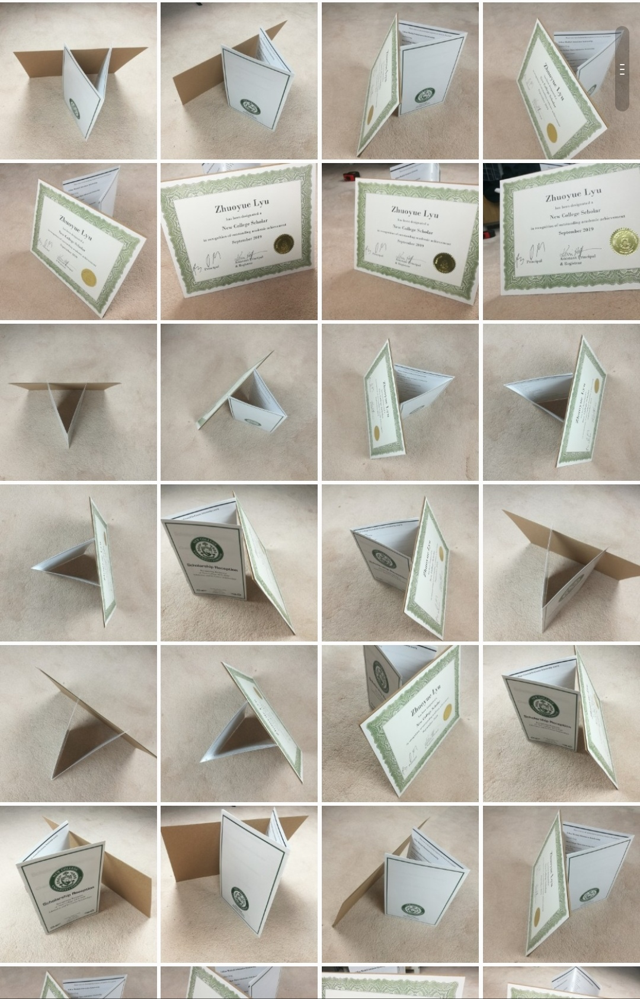

NOVEL VIEW SYNTHESIS USING NERF
Zhuoyue Lyu
I trained the NeRF on 60 photos of my bedroom and 60 photos of a certificate to generate novel view synthesis. This is also my final project for the course CSC 420: Introduction to Image Understanding at the University of Toronto.
room (forward facing synthesis)

certificate (360 inward facing synthesis)

room (60 training images)
certificate (60 training images)
Forward Facing Scene
How the number of views/epochs affect the 3D radiance field
20 views, epoch = 1

40 views, epoch = 1

60 views, epoch = 1

20 views, epoch = 10

40 views, epoch = 10

60 views, epoch = 10
By comparing the visualization horizontally, we can clearly see that the number of viewpoints affects the quality of the results; generally, the more the view, the better the outcome. For example, if we only train the model for one epoch, the outcome of 20 views (top left) is fluffy, unclear; we can even see a large chunk of blue colors floating in the air, this is because the training set of 20 views only has few examples of the bottom left corners of the bed, so the model can't estimate the 3D residence field properly. But if we provide 60 images, the outcome is pretty decent even for one epoch. By comparing the visualization vertically, we can see how the model gradually learns the environment as training went on. Just look at the edges of the nightstand, the triangle shape of the quilt...amazing!
However, if we look at the bottom right (60, epoch 10) image, we see a lot of black things floating around. I guess this is because my phone camera has a dynamic white balance, and when I was taking the image, my body blocked part of the light, thus created shadows. The model captured that accurately, but it's probably a little bit overfitting.
Other than that, the synthesis looks pretty good. Look at the reflection of the lamp's light on the surface of the nightstand , incredible!